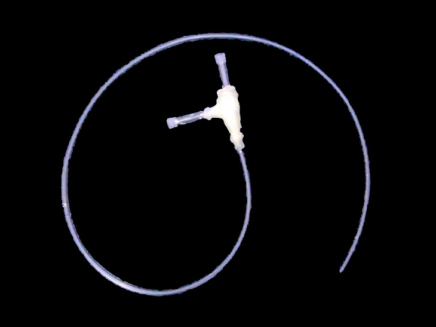

An Extremely Cheap Venturi Vacuum Pump

A Venturi vacuum pump works by flowing water through a tube that has a narrow point where a second tube is connected. The faster speed of water through the narrow point pulls a vacuum in the connected tube. There is a nice little instructable on how to put one together using an eppendorf tube, 3 pipette tips, adhesive (hot glue), and some tubing. Can't get much cheaper than that!
As an added bonus, if you use it in a class, you get to talk about the Venturi effect.